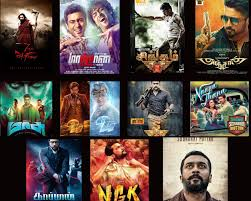

<!DOCTYPE html>
<html>
    <head>
        <title>Actor Suriya</title>
        <link rel="icon" href="download.jpg">
    </head>
</html>

<body style="background-color: bisque;">
    <center>
        <h1 style="color: darkblue;">Actor suriya</h1>
        <hr> 
        
    
    <h2>Suriya (born Saravanan Sivakumar on July 23, 1975) is a highly acclaimed Indian actor, producer, and television presenter, primarily known for his blockbuster work in Tamil cinema. Over the years, he has established himself as one of the most versatile and celebrated leading men in South Indian entertainment.</h2>

</center>
<h3>🏆 Critically Acclaimed & Award-WinningSoorarai Pottru (2020): Based on the life of Air Deccan founder Captain G.R. Gopinath, this film won Suriya the National Film Award for Best Actor.Jai Bhim (2021): A powerful legal drama inspired by real events, where Suriya plays a crusading lawyer fighting for justice for marginalized tribes.Vaaranam Aayiram (2008): A beautiful, emotionally driven coming-of-age drama directed by Gautham Menon, where Suriya plays a dual role as a father and son.🔫 Action & Blockbuster FranchisesSingam Franchise (2010–2017): The iconic action series where Suriya plays the fierce, high-energy cop Durai Singam.Ghajini (2005): The massive blockbuster that skyrocketed his pan-Indian stardom, playing a businessman suffering from short-term memory loss seeking revenge.Kanguva (2024): A high-budget fantasy action epic where Suriya plays dual roles as a warrior in the 11th century and a bounty hunter in the present day.🎭 Cult Classics & Fan FavoritesKaakha Kaakha (2003): A stylish, defining police drama that solidified his position as a top-tier action and romantic star.Pithamagan (2003): A moving rural drama in which Suriya starred alongside Vikram, earning widespread critical praise.24 (2016): An ambitious sci-fi thriller where he plays a triple role (including the iconic villain Athreya) centered around a time-travel watch.🎬 Recent Works & Upcoming ProjectsKaruppu (2026): A fantasy action film where he plays a guardian deity in disguise as a lawyer, which became a massive box-office success.Retro (2025): A romantic action flick directed by Karthik Subbaraj.Meiyazhagan (2024): A celebrated emotional drama where he served as a producer alongside his wife Jyothika.You can explore the complete, chronological catalog of his filmography on Wikipedia's Suriya Filmography or read fan ratings and reviews on Letterboxd's Suriya Page.If you're looking to watch one of his films today, tell me:Do you prefer high-octane action or emotional, slice-of-life drama?Are you looking for his oldest classics or his most recent releases?I can recommend the perfect movie to match your taste!</h3>


